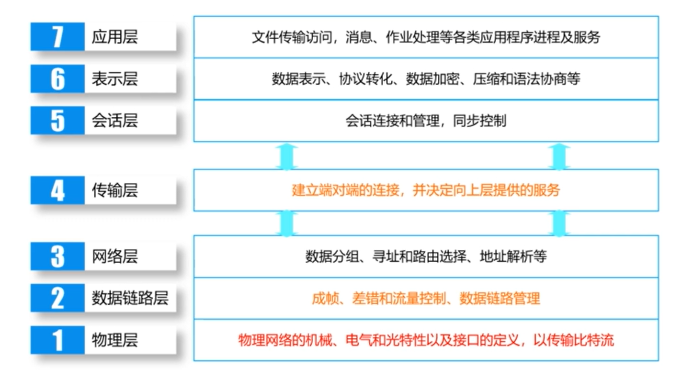

计算机网络笔记（一）
1.1 什么是计算机网络
计算机网络是通信技术与计算机技术相结合，实现信息传输和资源共享的一种信息系统
1.2 计算机网络体系结构
有无确认即可不可靠
面向连接的服务（电话）：
可靠的消息流：报文系列、网上下载完整页面
可靠的字节流：远程登录、ftp下载通过缓冲区分批下载
不可靠的连接：数字化声音（视频、直播）
无连接的服务（邮政）：
不可靠的数据报：电子函件
有确认的数据报：挂号邮件、快递
问答：数据查询
协议三要素：语法、语义、同步
1.3 OSI参考模型
根据计算机网络的定义，将其分为通信子网（通信技术）与资源子网（计算机技术）
通信子网
物理层：比特流传输
数据链路层：规范相邻节点的转发
网络层：寻址和路由
资源子网
传输层：屏蔽通信子网统一接口
会话层：不同业务之间的同步、恢复会话中断前状态
表示层：数据格式转换、压缩、加密
应用层：与用户交互（分配IP地址、域名解析）

数据链路层分为逻辑链路控制子层与媒体访问控制子层（已弱化）
网络层+：网络互联、为上层提供虚连接或数据报服务
路由：
路由算法
静态：扩散法、固定路由选择、随机路由选择、基于流量的路由选择
动态：独立路由选择、集中路由选择、分布式路由选择
传输质量控制
分ABC类网络分别提供不同级别的服务
简单法、基本错误恢复类、多路复用类、错误恢复和多路复用类、错误检测和恢复类
会话层
+活动管理，是一个概念上的层，功能很弱，往往合并于传输层或应用层
表示层
也是一个概念上的层，通常在应用层实现，实际上的数据加密在应用层（加密对象具体信息块、 文件）、传输层（通信进程、会话）、网络层（两个节点间所有通信）、数据链路层实现
应用层
+路由协议（部分，意味着路由协议不全在网络层），分为与通信相关和与通信无关两种
1.4 TCP/IP参考模型
应用层
所谓套接字(Socket)，就是对网络中不同主机上的应用进程之间进行双向通信的端点的抽象。一个套接字就是网络上进程通信的一端，提供了应用层进程利用网络协议交换数据的机制。 \[ Socket\ =\ IP\ address\ +\ TCP\ or\ UDP\ port \] 端口号分为服务器端口号与客户端端口号，服务器端口号往往是知名端口号，如80端口是TCP端口，为http开放；53端口是UDP端口，为DNS服务器开放。客户端端口号不固定，从1024以上随机产生，小于1024的端口被知名端口占用了，如上上面两个
传输层
多播或广播通信只能选择UDP协议，因为它是无连接的，单播通信TCP/UDP都可
TCP大文件，因为它是可靠的，保证数据正确完整性，UDP小文件，信道利用率高，快速发送数据
网络层
核心IP协议，ARP协议在逻辑地址（IP地址）与物理地址（网卡地址）建立映射关系，ICMP协议进行故障定位与网络中简单的管理功能，IGMP协议支持在网络中的多播通信
网络接口层
没有明确的约束，ATM、X.25、帧中继、以太网、FDDI等支持IP协议的都可以接入进来

常用讨论的模型：物理层、数据链路层、网络层、传输层、应用层
1.5 网络性能参数
带宽也和速率单位相同 bit/s，吞吐量指的是有效数据的速率
时延分为发送（取决于分组长度与额定速率）、传播（取决于物理距离、介质）、处理（主机或路由器处理的过程）、排队、接入（取决于信道使用权）时延，
时延带宽积=传播时延×带宽，又称以bit为单位的链路长度
时延抖动：由于数据分组交换，所走路径不同时延不同，克服的方法是利用缓存，但会增加时延（看视频开在缓存加载就是这个道理）
往返时间（RTT）：也称ping时间，对实现可靠通信非常重要，用于计算重传时间，算短了可能造成网络拥塞，算长了可能导致可靠性下降
信道利用率：发送方在一个发送周期的时间内，有效的发送数据所需要的时间占整个发送周期的比率，网络利用率是全网络的信道利用率的加权平均值 \[ D=\frac{D_0}{1-U} \] $ D_0 $为网络空闲时的时延，U是网络利用率


![buuctf [2019红帽杯]easyRE](/2024/01/23/buuctf-2019%E7%BA%A2%E5%B8%BD%E6%9D%AF-easyRE/cover.jpg)